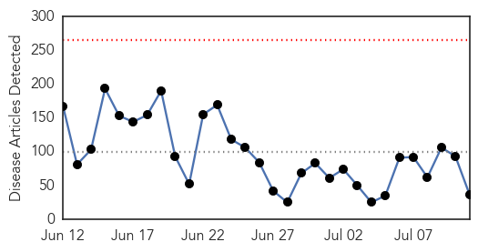
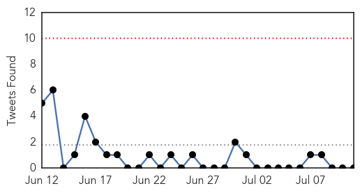
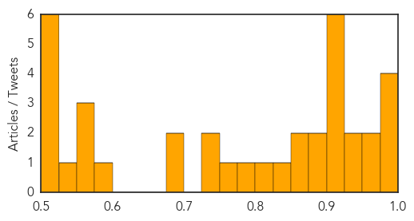

Unknown
30-Day Web Trend
0 alerts, 0 warnings

30-Day Twitter Trend
0 alerts, 0 warnings

Article Locations

Article Confidences
Top Articles:
- 0.994
- Foreigner with MERS in Philippines now free of the virus
- 0.994
- KBS World Radio
- 0.990
- South Korea reports 36th MERS death
- 0.977
- Korean cardinal praises medics' courage in face of Mers outbreak
- 0.951
- Lacey motel reopens after 3 cases of Legionnaires’ disease
- 0.951
- Deadly Squirrel Virus Kills 3 Breeders In Germany; Previously Unknown Bornavirus Causes Encephalitis
- 0.943
- Seoul Cardinal Praises Catholic Hospitals for Response to Epidemic
- 0.943
- Salmonella Week - Marler Clark is on it
- 0.921
- Health officials collect 25 sand-fly samples from Vadodara
- 0.917
- Chicago Tribune
- 0.917
- Chicago Tribune
- 0.917
- Chicago Tribune
- 0.917
- Chicago Tribune
- 0.917
- Chicago Tribune
- 0.897
- Hantavirus case in Texas Panhandle prompts precaution reminder
- 0.879
- The World On Arirang
- 0.872
- State finds regional hantavirus infection
- 0.858
- Washington state vet sees chance for worse bird flu season
- 0.828
- 8 ways to virus-proof yourself, Others news, Health News, AsiaOne YourHealth
- 0.822
- Fear of deadly water parasite is high, risk in Minnesota is low
- 0.780
- SGGP English Edition- Health Minister lauds group of medical workers being in risk of exposing HIV for saving patient
- 0.762
- State stresses water safety despite low amoeba infection risk
- 0.749
- Kidney disease hits Cuttack blocks
- 0.736
- Boy who got brain infection after swimming dies
- 0.692
- 3 Germans are likely to be killed by Squirrel virus
- 0.686
- More women dying through cervical cancer
- 0.584
- Flesh eating bacteria- take precaution when going to the beach
- 0.568
- The Caledonian-Record
- 0.566
- NCDC Officer Tours Anthrax Affected Blocks
- 0.566
- Philippines: Durian candy linked to more than 1,000 food poisoning cases in Surigao del Sur
- 0.529
- ‘Earthquake affects 1.5 million women of reproductive age’
- 0.522
- Cervical Cancer a major concern: Health Ministry pushing for the good health of women and girls in Sierra Leone
- 0.520
- One in 25 hospital patients have an infection caused by their medical care, CDC says -
- 0.504
- Listeria recalls lead to questions
- 0.502
- Authorities scramble after food poisoning cases reach 1,699 in Caraga
- 0.501
- How hospitals can kill. Here's what we can do about it.
- 0.501
- Otsuka : U.S. FDA Approves Otsuka and Lundbeck’s REXULTI® (Brexpiprazole) as Adjunctive Treatment for Adults with Major Depressive Disorder and as a Treatment for Adults with Schizophrenia
Top Tweets:
- 0.675
- Nuevo caso de ébola en Liberia es similar al de epidemia https://t.co/cnGUOIwC5E
MERS
30-Day Web Trend
0 alerts, 2 warnings

30-Day Twitter Trend
0 alerts, 0 warnings
Article Locations
Article Confidences
Top Articles:
- 0.997
- No Reported MERS Cases In Barbados
- 0.995
- Foreigner from ME now free from MERS-CoV
- 0.991
- No reported cases of MERS in Barbados -- NationNews Barbados -- Local, Regional and International News nationnews.com
- 0.987
- Foreigner with MERS now well, released
- 0.982
- WHO commended PH on handling of MERS-CoV
- 0.979
- Palace: Remain vigilant vs MERS-CoV
- 0.796
- Philippines MERS patient to be discharged from RITM after two negative tests
Top Tweets:
-
No tweets found for Jul 11, 2015